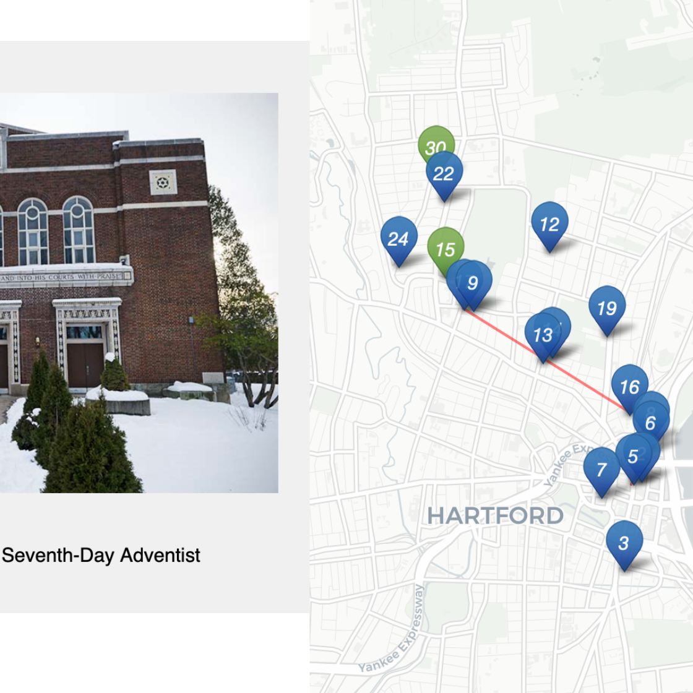

Leaflet Storymaps with Google Sheets
The Leaflet Storymaps code template is designed to show a point-by-point guided tour, with a scrolling narrative to display text, images, audio, video, and scanned map backgrounds, as shown in Figure 13.14. You enter all of your map data into a linked Google Sheet (or CSV file) or upload it into a GitHub repository, as shown in Figure 13.15. In addition, the Leaflet Storymaps template allows you to customize the appearance of your data, and to add more layers, such as historical maps and geographic boundaries, which you’ll learn how to prepare in Chapter 14: Transform Your Map Data. Furthermore, the storymap design is responsive, so that it appears top-and-bottom on smaller screens (where width is less than 768 pixels), and automatically switches to side-by-side on larger ones. Finally, the Leaflet template is built on flexible open-source software that’s written primarily in JavaScript, a very common coding language for the web, so you can customize it further if you have skills or support from a developer.
Figure 13.14: Explore the interactive Leaflet Storymaps with Google Sheets.
Figure 13.15: View the online Google Sheet template that feeds data into the Leaflet Storymaps demo above.
We created Leaflet Storymaps with Google Sheets to fill a gap that was not addressed by other tools. To be clear, other story map platforms are easier for beginners to start using right away, such as the free and open-source Knight Lab StoryMap platform, and also the subscriber-only proprietary ArcGIS StoryMaps platform, successor to the older Esri Story Maps platform. But we do not recommend either of them because both lack data portability, meaning that you can’t easily export any data or images you enter, something we cautioned you to watch out for when we discussed how to choose tools wisely in Chapter 2. By contrast, all of the data you enter into the Leaflet Storymaps linked Google Sheet and GitHub repo can easily be migrated to other platforms, as visualization technology continues to evolve in the future.
Explore the Gallery of Leaflet Storymaps with Google Sheets in Table 13.2 to see what other people created with this template.
|  Synagogue Map, Past and Present by Elizabeth Rose, Jewish Historical Society of Greater Hartford |
 Mapping the Upper Missouri by Jen Andrella |
 Kensington Remembers by Gordon Coonfield, Erica Hayes, James Parente, David Uspal, Cheyenne Zaremba |
 We Need to Talk about the Border by Elisabeth Blanchet and Laurent Gontier |
Tutorial Requirements and Overview
Before you begin, you must have a Google Drive account and know how to Make a Copy in Google Sheets as described in Chapter 3. Also, you must have a GitHub account and know how to Edit and Host Code with GitHub as described in Chapter 11. We omitted some screenshots below that illustrate steps we previously covered, so if you get lost, go back to those chapters.
Tip: You’ll notice that this tutorial outline is very similar to the one in the previous section, but the links in the first part are different, and several steps in the second part are new.
Since this tutorial involves multiple steps, we created this outline to provide a broad overview. In the first part, you will create and publish your copies of two templates, one for GitHub and another for its linked Google Sheet.
- Copy the GitHub template and publish your version with GitHub Pages.
- File > Make a Copy of Google Sheet template, Share, and Publish.
- Paste your Google Sheet browser address in two places in your GitHub repo.
- Update your Google Sheet Options tab info and refresh your live map.
In the second part, you will learn how to geocode and customize point data in the linked Google Sheet, upload images and other map data to your GitHub repo, and add scanned background map layers if desired.
- Add text, media, markers, and geocode locations in the Google Sheet Chapters tab.
- Optional: Add georeferenced historical map image or GeoJSON overlays.
In the third part, you have two options to finalize your map before publicly sharing with others:
- Save each Google Sheets tab as a CSV file and upload to GitHub.
- OR
- Get your own Google Sheets API Key to insert into the code.
If any problems arise, see the Fix Common Mistakes section of the appendix.
Now that you have a better sense of the big picture, let’s get started with the first part of the tutorial.
A) Copy the GitHub template and publish your version with GitHub Pages
Open the GitHub code template in a new tab.
In the upper-right corner of the code template, sign in to your free GitHub account.
In the upper-right corner, click the green Use this template button to make a copy of the repository in your GitHub account. On the next screen, name your repo
leaflet-storymaps-with-google-sheetsor choose a different meaningful name in all lower-case. Click the Create repository from template button. Your copy of the repo will follow this format:
https://github.com/USERNAME/leaflet-storymaps-with-google-sheets
- In your new copy of the code repo, click the upper-right Settings button and scroll way down to the GitHub Pages area. In the drop-down menu, change Source from None to Main, keep the default /(root) setting, and press Save as shown in Figure 13.16. This step tells GitHub to publish a live version of your map on the public web, where anyone can access it in their browser, if they have the web address.

Figure 13.16: In Settings, go to GitHub Pages, switch the source from None to Main, and Save.
- Scroll down to GitHub Pages section again, and copy the link to your published web site, which will appear in this format:
https://USERNAME.github.io/leaflet-maps-with-google-sheets
Scroll up to the top, and click on your repo name to go back to its main page.
At the top level of your repo main page, click on README.md, and click the pencil icon to edit this file.
Delete the link to the our live site, as shown in Figure 13.17, and paste in the link to your published site. Scroll down to Commit your changes.
Figure 13.17: Edit your README file to replace the link to our site with the link to your site.
- On your repo main page, right-click the link to open your live map in a new tab. Be patient during busy periods on GitHub, when your website may take up to 1 minute to appear for the first time.
B) File > Make a Copy of Google Sheet template, Share, and Publish
Open the Google Sheets template in a new tab.
Sign into your Google account, and select File > Make a Copy to save your own version of this Google Sheet on your Google Drive.
Click the blue Share button, and click Change to anyone with the link, then click Done. This publicly shares your map data, which is required to make this template work.
Go to File > Publish to the Web, and click the green Publish button to publish the entire document, so that the Leaflet code can read it. Then click the upper-right X symbol to close this window.
At the top of your browser, copy your Google Sheet address or URL (which usually ends in
...XYZ/edit#gid=0), as shown in Figure 13.18. Do NOT copy the Published to the web address (which usually ends in...XYZ/pubhtml) because that link is slightly different and will not work in this template.

Figure 13.18: Copy the Google Sheet address at the top of the browser, NOT the Publish to the web address.
C) Paste your Google Sheet browser address in two places in your GitHub repo
Our next task is to link your published Google Sheet to your Leaflet code in GitHub, so that it can pull your data from the Sheet to display on the map.
At the top of your GitHub repo, click to open the file named
google-doc-url.js, and click the pencil symbol to edit it.Paste your Google Sheet address or URL (which usually ends in
...XYZ/edit#gid=0) to replace our existing URL, as shown in Figure 13.19. Be careful NOT to erase the single quotation marks or the semicolon at the end. Scroll down to Commit your changes. See separate instructions about the Google API key further below.

Figure 13.19: Paste in your Google Sheet URL to replace our URL.
- Also, let’s paste your Google Sheet URL in second place to help you keep track of it. In your GitHub repo, click the README.md file to open it, click the pencil symbol to edit it, and paste your Google Sheet URL to replace our existing URL, as shown in Figure 13.20. Scroll down to Commit your changes.

Figure 13.20: Edit your README file to replace the link to our site with the link to your site.
Feel free to remove any other content on the README page that you do not wish to keep.
D) Update your Google Sheet Options tab info and refresh your live map
Now that your published Google Sheet is linked to your live map, go to the Options tab to update any of these items:
- Storymap Title
- Storymap Subtitle – with code for downward arrow:
<br><small>Scroll down <i class='fa fa-chevron-down'></i></small> - Author Name
- Author Email or Website
- Author GitHub Repo Link
Open the browser tab that displays your live map and refresh the page to see your changes. If your changes do not appear within a few seconds, see the Fix Common Problems section of the appendix.
E) Add text, media, markers, and geocode locations in the Chapters tab.
Now we can start to add new content to your map. In the Chapters tab of your Google Sheet, you’ll see column headers to organize and display interactive markers on your map. Replace the demonstration data with your own, but do not delete or rename the column headers, since the Leaflet code looks for these specific names.
Chapter: The title appearing at the top of each section in the scrolling narrative.
Media Link: You have several options to display either an image, audio, or video in each chapter. For images, you can insert an external link to an online service (such as Flickr), as long as it begins with
https(secure) and ends with either.jpgor.png. You can also insert a Youtube video link. Or you can upload an image file into themediasubfolder in your GitHub repo, as shown in Figure 13.21, and enter the pathname in the Google Sheet in this format:media/your-file-name.jpgor...png. Similarly, you can upload an audio file in.mp3(recommended) or.oggor.wavformat.

Figure 13.21: In GitHub, click to open the media folder and Add file - Upload files.
Warning: Media file pathnames are case-sensitive, and we recommend using all lowercase characters, including the suffix ending. Also, since the code template automatically resizes images to fit, we recommend that you reduce the size of any images to 600x400 pixels or less prior to uploading, to make sure your storymap scrolls quickly.
Tip: You can display multiple images for one location by creating a series of rows, but only list the Chapter and Location information in the first row of the series, and leave it blank for the others.
Media Credit: To display text about the origin of the media, such as “Source:…”.
Media Credit Link: Add a direct link to the source info in the Media Credit text above.
Description: Designed to display about a paragraph or less of text for the Chapter. You may insert HTML tags to add line breaks (such as
<br>), or to open external links in a new tab, such as<a href='https://www.w3schools.com/' target='_blank'>Visit W3Schools</a>. Learn about HTML syntax at W3Schools.Zoom: Leaflet’s default zoom levels are between 0 (world view) to 18 (individual buildings), and most free basemap tiles, such as those provided by Stamen or CartoDB are available for each level in this range. There exist more detailed basemaps that allow you to use higher values. Experiment with zoom levels to get the best view for your story, and remember that given the same zoom level, larger screens will show larger areas compared to smaller screens, such as smartphones.
Marker: Select either
Numbered(the default) orPlainorHidden. The latter works best when assigning several chapters to one location (to avoid stacking markers on top of each other) or when zooming out for a broader view (without highlighting one specific location).Marker Color: Insert any standard web color name such as
blueordarkblue, or insert a web color code such as#775307orrgba(200,100,0,0.5). See options at W3Schools Color Names.Location, Latitude, Longitude: These place your markers at points on the map. Although the code template only requires Latitude and Longitude, it’s wise to paste an address or place name into the Location column as a reminder to correspond with the numerical coordinates. Use the Geocoding by SmartMonkey Add-on from Chapter 3 and select Add-ons > Geocoding by SmartMonkey > Geocode Details to create a new sheet with sample data and display results for three new columns: Latitude, Longitude, and Address found, as shown in Figure 13.22. Paste in your own address data and repeat the step above to geocode it, then copy and paste the results into your Points sheet.
Figure 13.22: Select Add-ons–Geocoding by SmartMonkey–Geocode Details to display sample data with results for three new columns: Latitude, Longitude, and Address found.
Open the browser tab that displays your live map and refresh the page to see your changes. If your changes do not appear within a few seconds, see the Fix Common Problems section of the appendix.
F) Optional: Add historical map image or GeoJSON overlays
The code template allows you to enrich your story by placing two different types of layers on top of the background map: georeferenced map images (such as a historical map) and GeoJSON geodata (such as a pathway, boundary lines, or a color-coded choropleth map). You can add both types of layers to specific chapters or the entire story. Also, you can adjust the transparency level to reveal or hide the present-day background map. To prepare both types of layers, you will need to jump ahead to Chapter 14: Transform Your Map Data, but here we’ll explain the steps to insert them in your storymap template.
To add a historical map overlay to one or more story map chapters, it must be georeferenced (also called georectified), which means to digitally align the static map image with a more precise present-day interactive map. If you have a high-quality static image of a historical map, use the Mapwarper tool as described in Chapter 14 to align several known points with those on a present-day interactive map. Mapwarper transforms the static map image into interactive map tiles, and publicly hosts them online with a link in Google/OpenStreetMap format, similar to https://mapwarper.net/maps/tile/14781/{z}/{x}/{y}.png. Or you can search for historical maps that have already been georeferenced and transformed into tiles (and volunteer for crowdsourcing efforts to align maps) on platforms such as Mapwarper and the New York Public Library Mapwarper. Although map tile links are not viewable in a normal browser, they can be displayed by the Leaflet Storymaps code. Enter the tile link and your desired transparency level into the Overlay columns in the Chapters tab of your Google Sheet template, as shown in Figure 13.23.
- Overlay: Enter a map tile link in Google/OpenStreetMap format, similar to the sample above.
- Overlay Transparency: Enter a number from 0 (transparent) to 1 (opaque). The default is 0.7.
Figure 13.23: Enter map tile link and transparency level into the Google Sheet template (on left) to display it in one or more storymap chapters (on right).
To add a visible path, geographic boundaries, or a filled choropleth map to your story, consider adding a GeoJSON data layer to one or more chapters. Read about GeoJSON and geospatial data formats in Chapter 14, where you can also learn how to find existing GeoJSON boundary files, or draw or edit your own geodata with the GeoJson.io tool or Mapshaper tool. We recommend that you name your GeoJSON files in lower-case characters with no spaces. Upload the file to your GitHub repository by opening the geojson folder and selecting Add file - Upload files. In your Google Sheet template, enter the pathname in the GeoJSON Overlay column in this format: geojson/your-file-name.geojson, as shown in Figure 13.24.
(ref:storymap-geojson) Enter the pathname in the GeoJSON Overlay column (on left) to display it in one or more storymap chapters (on right).
Figure 13.24: (ref:storymap-geojson)
When you create or edit GeoJSON data with a tool like GeoJson.io, you can directly edit its feature properties. If you wish to display the same properties you assigned to your GeoJSON file in your storymap, we recommend naming them as follows:
- weight (width of line; storymap template default is 1px)
- color (of line; default is gray)
- opacity (of line; default is 0.5)
- fillColor (of polygon; default is white)
- fillOpacity (of polygon; default is 0.7)
Or you can enter properties and CSS codes in the GeoJSON Feature Properties template column, in this format, separated by semicolons, with no quotation marks required: weight:3;color:red;opacity:1;fillColor:orange;fillOpacity:0.9. You can assign colors with standard names, hex codes, or RGBA values as described in the W3Schools Colors Picker.
Inside the template you’ll discover more ways to customize your storymap, such as:
- Insert logo (see Options tab in Google Sheets)
- Insert Google Analytics tracking ID (see Options tab in Google Sheets
- Adjust title size and font (go to css/styles.css file in GitHub)
- To insert a horizontal divider in Chapter text (copy and paste this text into Description field in Google Sheets, and avoid changing single-quote marks into curly apostrophes)
<span style='display:block;width:100%;height:1px;background-color: silver; margin: 20px 0;'></span>
Finalize Your Story Map Before Sharing with the Public
Now you’re ready to finalize your map. If you wish to share your map link with the public, read the options below and choose either step G OR step H.
Warning: We reserve the right to change our Google Sheets API key at any time, especially if other people overuse or abuse it. This means that you must finalize your map using either step G or H below before sharing it publicly, because it will stop working if we change our key.
G) Save each Google Sheets tab as a CSV file and upload to GitHub
If you have finished entering most of your data into your Google Sheets, downloading them into separate CSV files and uploading those into your GitHub repo is the best long-term preservation strategy. This approach keeps your map and data together in the same GitHub repo, and removes the risk that your map will break due to an interruption to Google services. Plus, you can still edit your map data. If this approach makes sense, follow these steps:
- In your Google Sheets, go to each tab and select File > Download into CSV format, as shown in Figure 13.25, to create a separate file for each tab.
Figure 13.25: Download each Google Sheets tab as a separate CSV file.
- Shorten each file name as shown. The names must be exact, but they are not case-sensitive. The first two files below are required, and others are optional.
- Chapters.csv
- Options.csv
- Notes.csv (or .txt) Recommended to keep any notes with your data, but not required.
- In your GitHub repo, click the
csvsubfolder to open it, select Add file > Upload files, and upload all of the CSV files above into this subfolder, as shown in Figure 13.26. The Leaflet template code checks here first for data, and if it finds CSV files with the names above, it will pull the map data directly from them, instead of your Google Sheets. Remember that from this point forward, any edits in your Google Sheet will no longer appear automatically in your map.

Figure 13.26: Upload your map data files into the csv subfolder in GitHub.
- If you wish to edit your map after uploading your CSV files, you have two options. You can make small edits directly to your CSV files by opening them in the GitHub web interface. Or you can make larger edits in the Google Sheet, and repeating the steps above to download them in CSV format and upload them to replace your existing files on GitHub.
H) Get your own Google Sheets API Key to insert into the code
As an alternative to step G, if you wish to continue to store your map data in your Google Sheets that is published online, go to the section of this chapter titled Get Your Own Google Sheets API Key, and insert it into the Leaflet map code as described, to avoid overusing our key. Google Sheets requires an API key to maintain reasonable usage limits on its service. You can get a free Google Sheets API key if you have a personal Google account, but not a Google Suite account provided by your school or business.
If problems arise, see the Fix Common Mistakes section of the appendix.